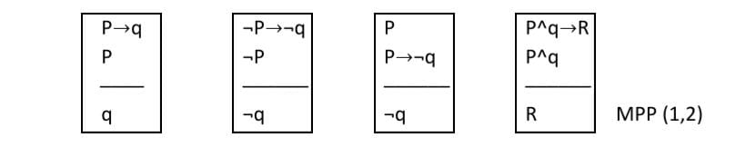
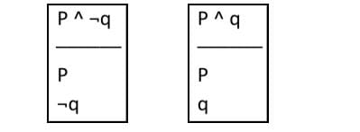
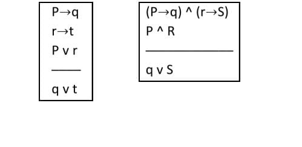
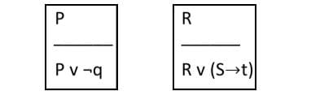

Inferencias Lógicas
Es el proceso de razonamiento que genera una conclusión a partir de una o varias premisas. Las reglas de inferencias que rigen el uso de los términos de enlace son muy simples, se pueden aprender como un juego. El juego se juega con proposiciones o fórmulas lógicas, nombre que se le da a la proposiciones simbolizadas. Se empieza con conjuntos de fórmulas que se denominan premisas. El objeto del juego es utilizar las reglas de inferencia de manera que conduzcan a otras formulas que se denominan conclusiones. El paso lógico de las premisas a la conclusión es una deducción.
-
Modus Ponendo Ponens
-
Modus tollendo tollens
-
Modus tollendo ponens
-
Ley doble negación
-
Ley de adjunción a o ley de conjunción
-
Ley de simplificación
-
Ley del silogismo hipotético
-
Dilema Constructivo
-
Ley de la adición
-
Simplificación disyuntiva
-
Ley de la bicondicional
Se tienen 2 premisas, una condicional y una premisa cualquiera, si la premisa cualquiera es igual al antecedente de la condicional, entonces resulta o se infiere el consecuente.
Se tienen 2 premisas, una condicional y una premisa cualquiera, si la premisa cualquiera es la negación del consecuente de la condicional, entonces resulta o se infiere el antecedente negado.

Dadas dos premisas, una de ellas tiene que ser una disyunción y la otra, una premisa cualquiera, si la premisa cualquiera es la negación de uno de los componentes de la disyunción, resulta o se infiere el otro componente, tal y como está.

Dada una primicia que está doblemente negada esta saldrá positiva

Se tienen 2 premisas cualquiera, estas pueden unirse, pero solo con una conjunción

Si existe una premisa que sea una conjunción, se puede simplificar, es decir sacar un componente, o los 2 pero en diferentes pasos.
Para aplicar esta regla se necesitan 2 premisas que sean condicionales, el antecedente de una premisa, debe ser igual al consecuente de la otra, cuando eso sucede, por silogismo hipotético se infiere, el antecedente de una y el consecuente de la otra.

Se tienen 3 Premisas: 2 Condicionales y 1 Disyunción, los componentes de la disyunción, son los antecedentes de las condicionales, resulta o se infiere, una disyunción, formada por los consecuentes de las condicionales.
Si tengo una premisa cualquiera p, puedo adicionarle lo que necesite, pero por medio de una Disyunción.
Se obtienen 2 premisas condicionales con el mismo consecuente y la tercera premisa que es una disyunción y cuyas partes son los antecedentes de la premisa anterior se infiere en los consecuentes de ambas implicaciones.

Si tengo una premisa bicondicional, puedo expresarla como condicional, utilizando sus términos en cualquier sentido.